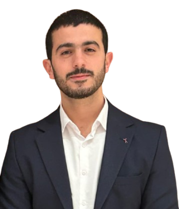
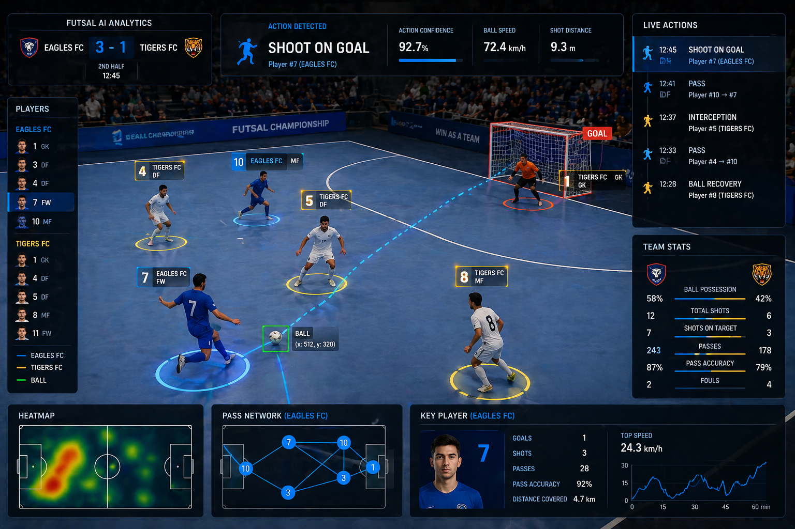
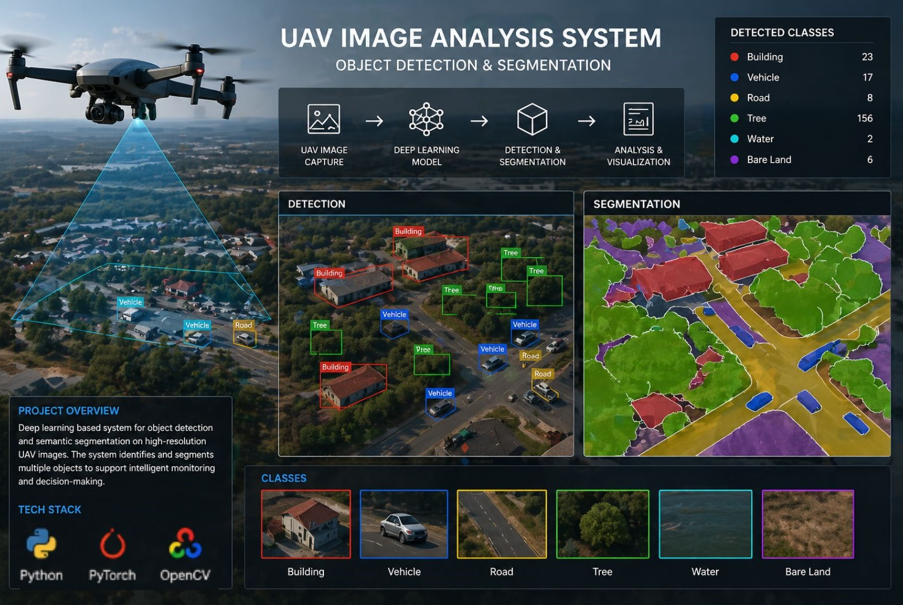
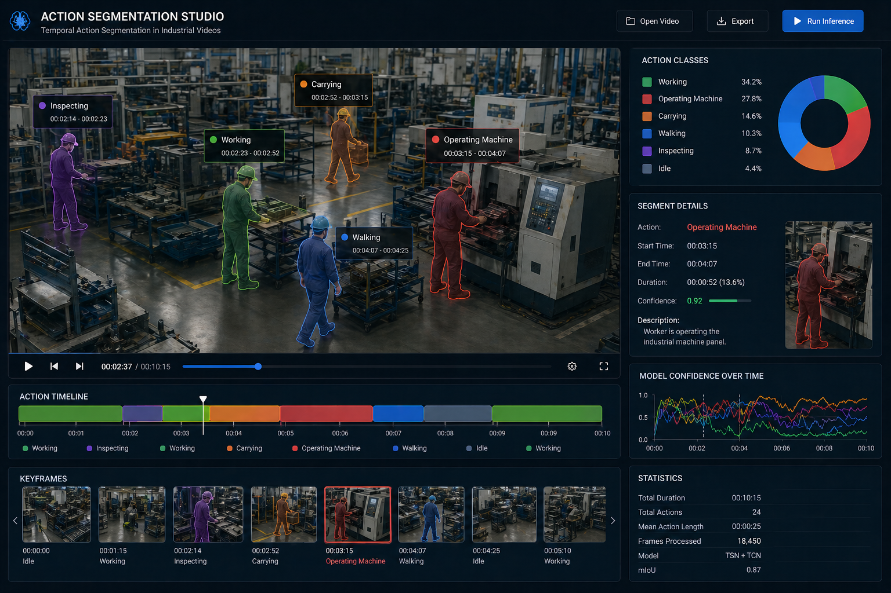
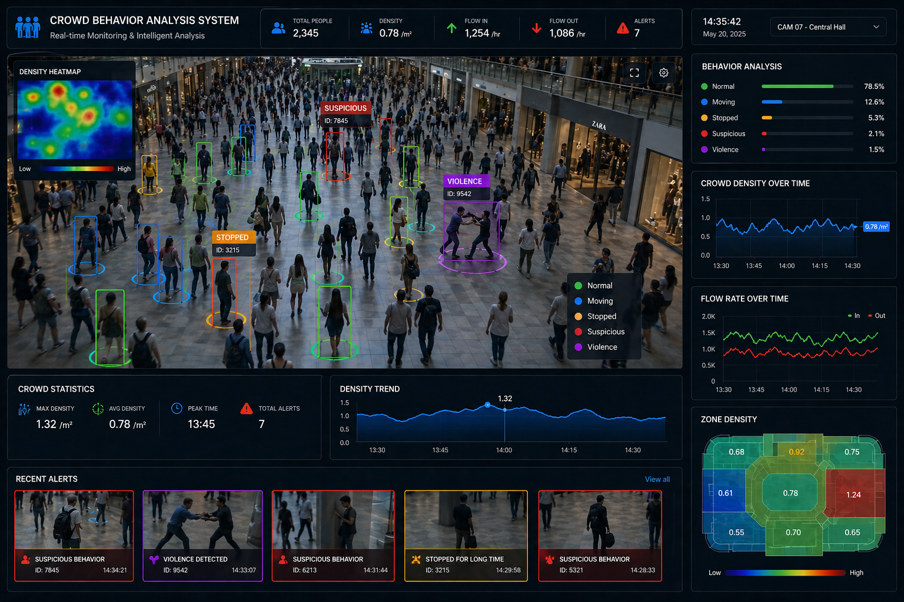
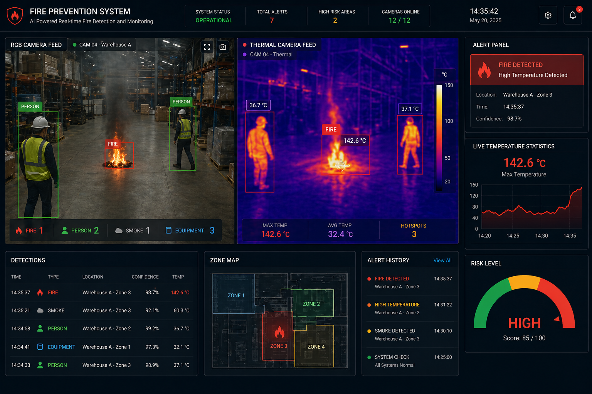
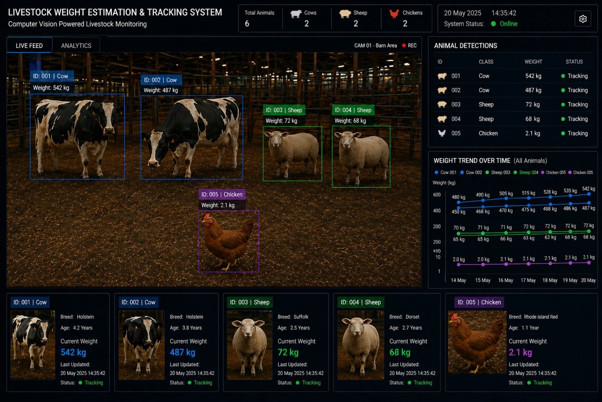

Expert in deep learning, video analysis, and image processing. Specialized in temporal dependencies, action recognition, and designing end-to-end computer vision systems with CNNs, Transformers, and temporal models for real-world applications.


AI-driven sports analytics using ViT and MViT for real-time action detection in futsal with predictive player performance models.

Object detection, classification, and segmentation on high-resolution aerial imagery with optimization for large-scale UAV datasets.

Continuous factory activity recognition addressing long-term temporal dependencies in video streams with RNNs and Transformers.

Motion pattern analysis, density estimation, and abnormal behavior detection in video sequences using deep learning.

Thermal camera-based hotspot detection and analysis with models optimized for varying environmental conditions.

Visual data processing combining object detection and regression-based approaches for automated livestock analysis.
HARMONY TECHNOLOGY
June 2025 - February 2026
Performed object detection and segmentation on UAV images. Contributed to fire prevention systems using thermal cameras. Built crowd behavior analysis models and temporal action segmentation for factory automation.
SPORTSCORE
January 2025 - May 2025
Developed AI-driven sports analytics using deep learning (ViT, MViT) and RNNs for real-time action detection in futsal. Built predictive models for player performance and implemented data pipelines.